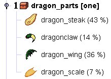

You can recognize this type of treasurelist by the icon:
 , as
well as the name ending with "[one]". Such a treasurelist produces always
exactly one item from the list. The objects on the list can have different
chances set (the %-values in brackets), which indicate that some items are
more likely to get chosen, and other less likely.
, as
well as the name ending with "[one]". Such a treasurelist produces always
exactly one item from the list. The objects on the list can have different
chances set (the %-values in brackets), which indicate that some items are
more likely to get chosen, and other less likely.
Examples for treasurelists producing one item:
|  |
As you can see in the right hand side example, treasurelists may contain yet other treasurelists. If chosen, such sub-lists get processed in recursive fashion. You can view the contents of each sub-list by clicking on the expand-mark.